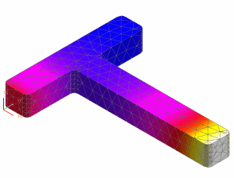

View thermal results
 Simulation Navigator
Simulation Navigator
-
 Results
Results
 Post-Processing Navigator
Post-Processing Navigator
-

 Thermal Solution (expand if necessary)
Thermal Solution (expand if necessary)
-
Temperature – Nodal
-
The results are displayed in the graphics window.

When you finish looking at the results, return to the model.
 Return to Model (Layout Manager toolbar)
Return to Model (Layout Manager toolbar)
|
Tip |
If you do not see the Layout Manager toolbar, right-click in the toolbar area and choose Layout Manager. |